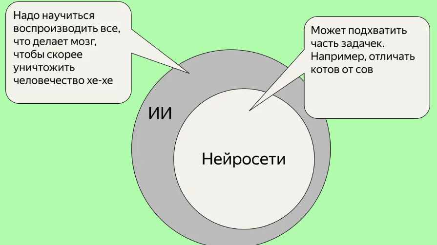
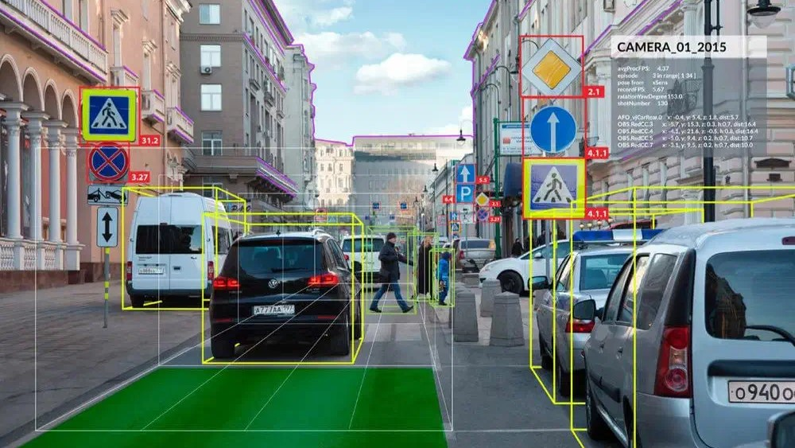

-ИСКУССТВЕННЫЙ ИНТЕЛЕКТ-

1. Голосовые помощники. Siri от Apple, Google Assistant, Alexa от Amazon и Алиса от Яндекса работают на основе ИИ и отвечают на вопросы, делают напоминания, управляют устройствами.
2. Рекомендательные системы. Сервисы потокового видео, такие как Netflix и YouTube, используют технологию искусственного интеллекта для анализа предпочтений пользователей и рекомендаций фильмов или видео. Они учатся на основе предыдущих просмотров и отметок «нравится».
3. Распознавание образов. В смартфонах и некоторых фотоаппаратах есть функция автоматического распознавания лиц и объектов. ИИ позволяет определить, кто и что находится на фотографии. Умная камера есть и в приложении Яндекса. Например, можно навести её на предмет, и приложение найдет похожий товар в интернете.
4. Автопилоты и автономные транспортные системы. Искусственный интеллект применяется в авиации и автомобильной индустрии для разработки автопилотов и систем автономного вождения. Он позволяет транспортным средствам анализировать окружающую среду, принимать решения на основе полученной информации и безопасно перемещаться.

5. Финансовые аналитические системы. ИИ используется для анализа данных, прогнозирования трендов на рынке, определения рисков и принятия решений по инвестициям. Он помогает улучшить эффективность и точность финансовых операций.
6. Языковые переводчики. Сервисы машинного перевода, такие как Google Translate, используют ИИ для автоматического перевода текстов с одного языка на другой. Они обучаются на большом количестве параллельных текстов и статистических моделях, чтобы предлагать качественные переводы.
7. Игровая индустрия. В компьютерных играх искусственный интеллект используется для создания виртуальных персонажей с интеллектом, способных адаптироваться к действиям игрока, принимать решения и симулировать реалистичное поведение.
8. Медицинская диагностика. ИИ используют, чтобы анализировать рентгеновские снимки или снимки МРТ. Это помогает врачам более точно диагностировать заболевания и принимать решения о лечении.
9. Робототехника объединяет ИИ, машинное обучение и физические системы, чтобы создавать интеллектуальные машины, которые могут взаимодействовать с реальным миром. Яркий пример — роботы Boston Dynamics. Они используют ИИ для балансирования, навигации, преодоления препятствий и перетаскивания предметов.